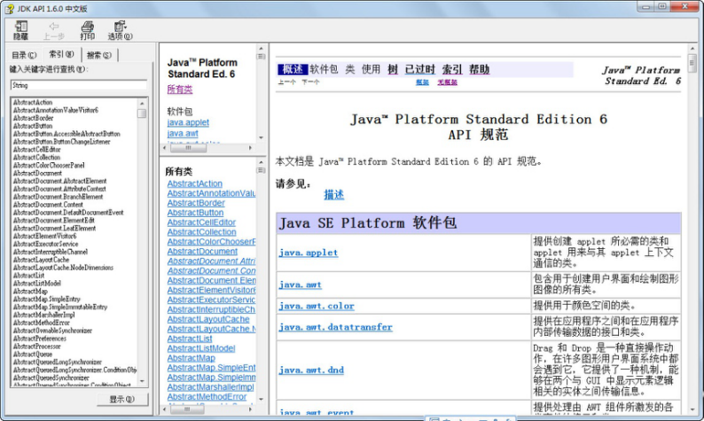
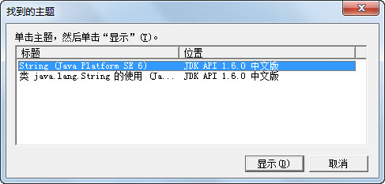
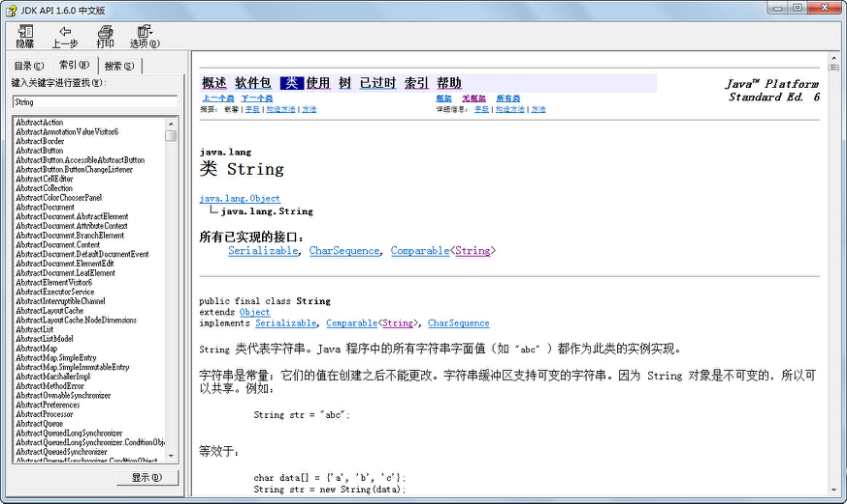

5.8 Java API文档的使用
前面在介绍String字符串类的方法时，只是介绍了其中一小部分常用的方法。String字符串类有很多方法，如何记住它们呢？答案是：记不住，也不用记！
Java给程序员提供了Java API文档，供Java程序员随时查阅。API（Application Programming Interface）指应用程序编程接口。
Java语言提供了一些核心类库供Java程序员直接调用，程序员无须关注类库中方法的实现细节，只需关注其输入、输出和功能等，这些类库统称为API。在一个文档中统一定义类库中方法的输入、输出和功能描述，这个文档就是API文档。
在使用Java API文档时，需要注意API文档的版本号要和JDK的版本号一致，否则可能会出现随着JDK版本的更新导致的API文档与实际类库之间存在差异。
接下来介绍Java API文档的文档结构和如何使用Java API文档，这里以.chm格式的Java API文档为例进行介绍。
Java API文档的文档结构如图5.13所示。

图5.13 Java API文档的文档结构
如果要查找String字符串类的其他方法，可以在“索引”处输入String，在弹出的对话框（见图5.14）中选择相关主题，单击“显示”按钮，就会显示String类的相关内容，如图5.15所示。
在String类的文档中，主要包括以下内容：类的继承和被继承关系、类的声明、类的功能说明、属性列表、构造方法列表和方法列表等。其中每个属性、构造方法和方法都包含一个超链接，通过单击该链接可以查看更详细的说明。

图5.14 在Java API文档中选择主题

图5.15 Java API文档查询结果